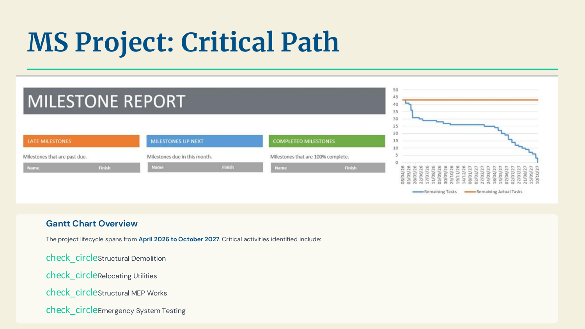

King Khalid International Airport
EGM 362 · Academic engineering project-management study
- Context
- EGM 362 · Engineering management
- Project status
- Academic planning study
- Tools & methods
- WBS · MS Project · Risk and cost planning

Planning a terminal expansion
An academic planning case for a proposed KKIA expansion, covering scope, schedule, cost, resources, quality, risk, project controls, and handover. The study uses an approximately SAR 850 million budget and a five-million-passenger capacity increase by 2030 as planning assumptions.
Work packages & resources
The work breakdown covers site preparation, landside planning, construction, airport services, and commissioning. Detailed activities include underground-utility relocation, noise and air-quality studies, HVAC installation, and smart-airport devices.
Resource planning applies the four categories of people, equipment, materials, and working capital.
Controls, risks, and close-out
The study considers technical integration, external conditions, schedule and cost exposure, risk-response strategies, earned-value indicators, and managerial corrective action. MS Project supports the schedule and critical-path discussion.
Close-out includes operational readiness, commissioning, documentation, training, and handover. These are course planning deliverables, not a claim of managing the real airport construction.
More media +

Resources
Original project documents.